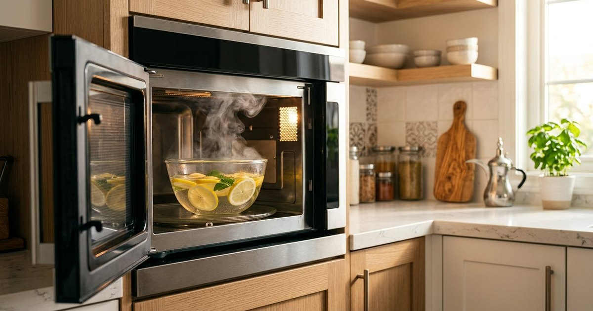

تنظيف الميكروويف بالبخار: طريقة سريعة وآمنة
نظّف الميكروويف من الداخل بالبخار والليمون دون مواد كاوية: خطوات للبقع العنيدة والروائح، مع احتياطات المعادن والأواني ومتى تستدعي فنيًا.

الخلاصة السريعة
أسهل طريقة لتنظيف الميكروويف من الداخل: وعاء ماء ساخن بالليمون يشغَّل دقائق حتى يتكثف البخار على الجدران، ثم مسح بقطعة قماش ناعمة. البخار يذيب الدهون والبقايا الجافة دون فرك عنيف ودون مواد كاوية. لا تشغّل الجهاز فارغًا أبدًا، ولا تدخل معادن أو أواني غير مخصصة.
لماذا يتسخ الميكروويف بسرعة؟
التناثر أثناء التسخين طبيعي: السوائل تغلي فجأة، والصلصات تفرقع، وبقايا الطعام تلتصق بالجدران. كلما تُرك البقعة جفت والتصقت أكثر، وصارت رائحة الجهاز تحمل نكهة آخر وجبة. التنظيف المنتظم القصير أسهل من جلسة فرك طويلة بعد تراكم أسابيع.
قاعدة عملية: أي انسكاب يُمسح وهو دافئ (بعد أن يبرد الوعاء ويكف البخار) لا يترك أثرًا، بينما الانسكاب الذي يُنسى حتى اليوم التالي يحتاج بخارًا وفركًا. غطِّ الأوعية عند التسخين كلما أمكن، فهذا يمنع أغلب التناثر من الأساس.
ماذا تحتاج؟
- وعاء آمن للميكروويف (زجاجي أو خزفي أو بلاستيك مخصص) يتسع لكوبين من الماء.
- ليمونة مقطعة أو ملعقتان كبيرتان من عصير الليمون (أو قشر برتقال للرائحة).
- قطعة قماش ناعمة أو إسفنجة غير كاشطة.
- عيدان خشبية لتنظيف الفتحات الصغيرة إن لزم.
خطوات التنظيف بالبخار
- املأ الوعاء بكوبين من الماء وأضف الليمون.
- شغّل الميكروويف 3 إلى 5 دقائق حتى يغلي الماء ويتكثف البخار على الجدران والنافذة.
- اترك الوعاء داخل الجهاز دقيقتين إضافيتين دون فتح الباب كي يعمل البخار على البقع.
- افتح الباب بحذر — البخار ساخن جدًا — وأخرج الوعاء بقطعة قماش.
- امسح الجدران والسقف والصحن الدوار بقطعة القماش؛ ستزول البقايا بسهولة.
- جفف بقطعة نظيفة واترك الباب مفتوحًا قليلًا حتى يجف تمامًا.
إن كانت البقايا دهنية جدًا أعد الدورة مرة أخرى قبل الفرك؛ تكرار البخار أنفع من الفرك القوي الذي يخدش السطح الداخلي ويترك خدوشًا تجمع الطعام لاحقًا.
بقع عنيدة وجافة
لبقعة قديمة لا يذيبها البخار من أول مرة: اصنع معجونًا خفيفًا من بيكربونات الصوديوم والماء وضعه على البقعة بقطعة ناعمة، واتركه دقائق ثم امسح. البيكربونات مادة كاشطة خفيفة آمنة على السطح الداخلي، لكن لا تفرك بعنف ولا تستخدم سلكًا معدنيًا أو إسفنجة خشنة أبدًا.
لا تستخدم منظفات الفرن أو المواد الكاوية داخل الميكروويف؛ أبخرتها قد تبقى في الجهاز وتلامس طعامك لاحقًا. الماء والليمون والبيكربونات تكفي لكل تنظيف داخلي تقريبًا.
التخلص من الروائح
أضف قشر الليمون أو البرتقال أو عود قرفة صغير إلى ماء التنظيف فتمتص الجلسة الرائحة العالقة. لرائحة قوية (سمك مثلًا) كرر جلسة البخار ثم اترك باب الجهاز مفتوحًا ساعة بعد التجفيف. إذا بقيت رائحة تشبه الاحتراق رغم التنظيف، فافحص ما إذا كان هناك طعام محترق تحت الصحون أو خلف الحلقة الدوارة.
الصحن الدوار والزجاج
أخرج الصحن الدوار وحلقة التثبيت إن كانت قابلة للإزالة واغسلهما في الحوض بالماء الدافئ والصابون. لا تضعهما في الميكروويف فارغين للتجفيف، ولا تدخلهما وهما مبلولان بماء متسخ. بعض الموديلات لها قرص معدني لا يدخل الماء؛ امسحه بقطعة مبلولة فقط وفق دليل جهازك.
جدول صيانة بسيط
| متى | الإجراء |
|---|---|
| بعد كل انسكاب | مسح دافئ فوري بعد أن يبرد الوعاء |
| أسبوعيًا | جلسة بخار بالليمون ومسح شامل |
| عند رائحة عالقة | بخار بالليمون أو القرفة وتهوية |
| شهريًا | غسل الصحن الدوار وفحص الحلقة |
احتياطات لا تتجاوزها
- لا تشغّل الميكروويف فارغًا أبدًا؛ الموجات بلا طعام تمتصه قد تلحق ضررًا بالجهاز.
- لا تدخل معادن أو أواني بحواف معدنية أو ورق ألمنيوم.
- استخدم فقط أواني مخصصة للميكروويف؛ بعض البلاستيك يذوب ويطلق مواد في الطعام.
- البخار يحرق: افتح الباب ببطء وبعيدًا عن وجهك، وأخرج الوعاء بقطعة قماش.
- إذا لاحظت شرارًا أو تلفًا في الباب أو مانع التسرب فاستخدم الجهاز بعد فحصه من فني.
أسئلة شائعة
هل الخل مناسب لتنظيف الميكروويف؟
يعمل الخل لكن رائحته تبقى في الجهاز مدة أطول؛ الليمون أنفع للرائحة. إن استخدمت الخل فخففه بماء كثير واشطف جيدًا.
ماذا لو لم يكن هناك ليمون؟
الماء وحده يعمل؛ أضف القليل من الخل أو قشر الحمضيات أو القرفة للرائحة فقط.
الجهاز جديد ومازال يعمل، لماذا أنظفه؟
التراكم الدهني يقلل كفاءة التسخين ويسبب روائح، والتنظيف الدوري يحمي سطحه ويطيل عمره.
أخطاء شائعة في تنظيف الميكروويف
استخدام سلك معدني يخدش السطح فيصير مرتعًا للبقايا. تشغيل الجهاز فارغ «لتعقيمه» ظنًا أنه ينظف. رش المنظف مباشرة على الجدران فيتسرب للفتحات. إهمال الانسكاب حتى يجف فيتحول إلى جلسة فرك طويلة. تجاهل الصحن الدوار وبقاياه تحت الحلقة. امسح الانسكابات مبكرًا، ونظف بالبخار أسبوعيًا، وجفف الجهاز قبل إغلاق الباب.
الخلاصة
بخار الماء والليمون يذيب الدهون والبقايا دون فرك عنيف أو مواد كاوية. غطِّ الأوعية، امسح الانسكابات الدافئة، وجدول جلسة بخار أسبوعية؛ سيبقى جهازك نظيفًا وآمنًا ورائحته محايدة.